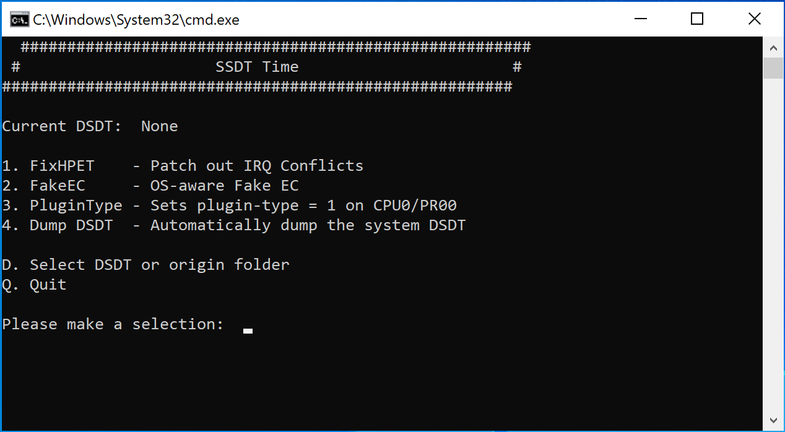

Last modified: Fri Jun 05 2020 19:34:37 GMT+0000 (Coordinated Universal Time)
SSDTs: The easy way
So here we'll be using a super simple tool made by CorpNewt: SSDTTime
What this tool does is, it dumps your DSDT from your firmware, and then creates SSDTs based off your DSDT. This must be done on the target machine running either Windows or Linux
So what CAN'T SSDTTime do
- HEDT SSDTs:
- The ACPI is odd on these platforms so manual work is required
- This includes X79, X99 and X299 systems
- Prebuilt can be found here: Embedded Controller
- Laptop EC fix:
- This is because you do not want the EC powered off
- Prebuilt can be found here: Embedded Controller
- SSDT-PNLF:
- Need to be configured to your system
- SSDT-GPI0:
- Need to be configured to your system
- AWAC and RTC0 SSDTs:
- 300 series Intel boards will also need to figure this out (Z390 systems are most common for requiring this but some Gigabyte Z370 do as well)
- PMC SSDT:
- For fixing 300 series Intel NVRAM
- Prebuilt can be found here: NVRAM PMC
- USBX SSDT:
- This is included on sample SSDTs but SSDTTime only makes the SSDT-EC part, Skylake and newer users can grab a pre-built here: SSDT-USBX.aml
For users who don't have all the options available to them in SSDTTime, you can follow the "SSDTs: The long way" section. You can still use SSDTTime for SSDTs it does support.
Running SSDTTime
Run the SSDTTime.bat file as Admin on the target machine and you should see something like this:

What are all these options?:
1. FixHPET - Patch out IRQ Conflicts- IRQ patching, mainly needed for X79, X99 and laptop users(use option
Cto omit conflicting legacy IRQs)
- IRQ patching, mainly needed for X79, X99 and laptop users(use option
2. FakeEC - OS-aware Fake EC- This is the SSDT-EC, required for Catalina users
3. PluginType - Sets plugin-type = 1 on CPU0/PR00- This is the SSDT-PLUG, for Intel only
4. Dump DSDT - Automatically dump the system DSDT- Dumps your DSDT from your firmware
What we want to do is select option 4. Dump DSDT first, then select the appropriate option(s) for your system.
What about USBX?
For Skylake and newer plus AMD, you can grab a pre-built file here: SSDT-USBX.aml. This file is plug and play and requires no device configuration, do not use on Broadwell and older.
Troubleshooting note: See General Troubleshooting if you're having issues running SSDTTime
Adding to OpenCore
Don't forget that SSDTs need to be added to Opencore, reminder that .aml is complied, .dsl is code. Add only the .aml file:
- EFI/OC/ACPI
- config.plist -> ACPI -> Add
Reminder that Cmd/Crtl+R with ProperTree pointed at your OC folder will add all your SSDTs, kexts and .efi drivers to the config for you. Do not add your DSDT to OpenCore, its already in your firmware. If you are unsure what this is referring to, go back to the OpenCore guide and select your config based of the architecture of your CPU.
For those who do not yet have a config.plist, you'll want to next head back to your respective OpenCore guides and create the config.plist:
Users of FixHPET will also need to merge oc_patches.plist into their config.plist
Steps to do this:
- Open both files,
- Delete the
ACPI -> Patchsection from config.plist - Copy the
ACPI -> Patchsection from patches.plist - Paste into where old patches were in config.plist